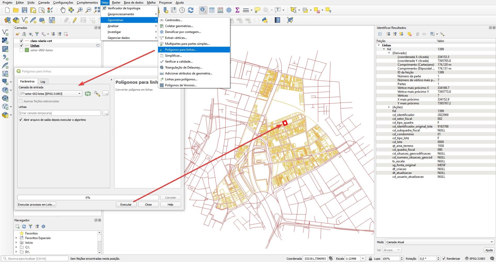

Utilizaremos os seguintes arquivos:
Abra os arquivos no QGIS conforme Imagem 1
Imagem 1
Transformar os lotes que são polígonos para linhas, os atributos serão mantidos
Clique em Vetor>Geometrias>Polígonos para linhas...como ilustra a Imagem 2

Imagem 2
As linhas geradas serão explodidas particionando em cada vértice, os atributos do polígono original dos lotes será replicado a todas as linhas
Clique em Caixa de ferramentas de processamento>Geometria do vetor>Explodir linhas
Imagem 3
Criar um ponto que fica no meio das linhas
Cliquem em Vetor>Geometrias>Centroides...
Imagem 4
Voltando para os polígonos dos lotes, mais um processamento será aplicado sobre ele. Dissolvendo os polígonos do lote, formando apenas uma quadra
Os próximos passos serão feitos para remover os pontos que ficam internamente das quadras, apenas os pontos mariginais, que ficam na parte externa, serão mantidos.
Clique em Vetor>Geoprocessamento>Dissolver
Imagem 5
A criação do Buffer interno é garantir que os pontos externo não sejam suprimidos, apenas os pontos internos.
Clique em Vetor>Geoprocessamento>Amortecimento. Valor de -0,20 metros a ser configurado no campo Distância.
Imagem 6
Utilizar do buffer interno criado no passo anterior para selecionar os pontos dentro da quadra, criados no passo Ponto central das linhas.
Clique emVetor>Investigar>Selecionar por localização
Selecionar OS PONTOS utilizando o BUFFER INTERNO criado, escolha a opção Interseccionam

Imagem 7
Criar uma linha entre o elemento ponto da face do lote até a linha dos logradouros que possui o atributo de Classificação Viária.
Ressaltar que os atributos ainda não serão incorporados, apenas será criado o elemento vetorial.
Clique em Caixa de Ferramentas de processamento>GRASS>Vetor(v.*)>v.distance
Selecione as opções 'from' = pontos de faces de lote e 'para' = logradouro com a Classificação Viária. Para esse exemplo, a caixa Apenas feições selecionadas ficou marcada. Na opção 'Upload' selecione to_along. Valores especifícados apenas o id

Imagem 8
Buffer sim de 20 cm para certificação a intersecção da linha de logradouro com o ponto de face de lote.
Imagem 9
Transferir os atributos do logradouro para o ponto de face de lote. Será feito em duas etapas, primeiro do logradouro para o buffer da linha de conexão e depois do buffer para o ponto
Clique em Vetor>Gerenciar dados>Associar atributos porm local...
Selecione a camada base o buffer Unir a camada de logradouros deixe o predicado geométrico Intersecta habilitado
Unir por tipo uma-a-uma (Tomar atributos apenas da primeirafeição coincidente>
faça o procedimento semelhante para transferir os dados do buffer para o ponto
Imagem 10
Imagem 11
Utilizar o mesmo comando de Dissolver, agora é importante agrupar por atributos:
Imagem 12
Na imagem abaixo, os pontos estão com os mesmos nomes das ruas com as faces mais próximas, bem como a classe viária representada pelas mesmas cores
Mais de um ponto pode estar posicionado para o mesmo logradouro, mas apenas um registro (linha) é contabilizada no banco.
Imagem 13